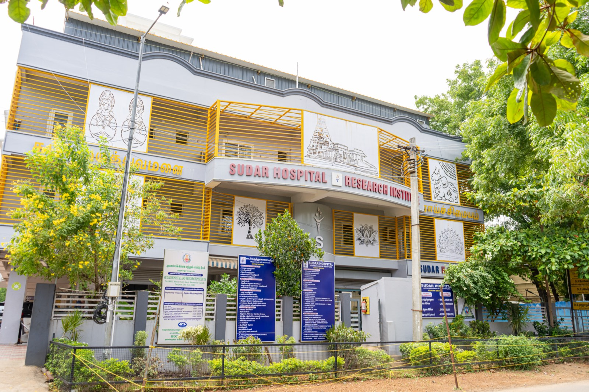
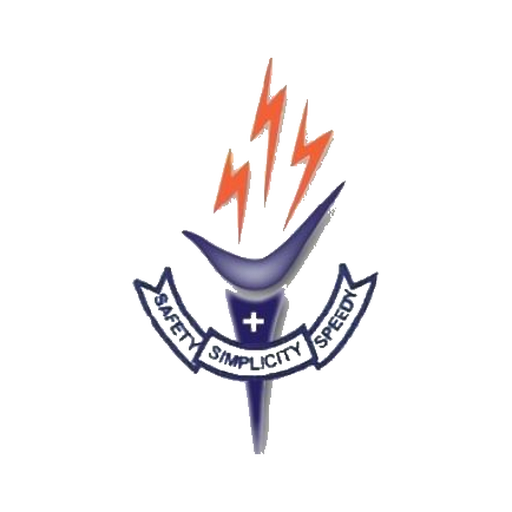

Dr. B. Sumathi
Hospital Operations — Head
MBBS


Founded in 2007 as Sudar Hospital by Dr. S. Sasiraj in a rented building, the hospital later moved to its present location as a modern facility — Sudar Hospital And Research Institute. It was developed and established by a reputed surgeon and son of the soil, Dr. S. Sasiraj (MS, DNB), at Thanjavur, Tamil Nadu.
Today it stands as one of the most distinguished multispecialty surgical centres, providing advanced surgical services. Alongside general and laparoscopic surgeries and day-care surgeries, the hospital offers dedicated dialysis and ophthalmology with quality and patient safety, along with stringent infection prevention and control standards.
The vision, mission and values that shape every decision we make for the patients who trust us with their care.
To become a Multi Specialty Surgical centre with state-of-the-art facilities and international standards, providing each healthcare seeker a sense of contentment and peace through compassionate care, commitment and responsibility in work.
சர்வதேசத் தரத்தில், அதிநவீன வசதிகள் கொண்ட மல்டி ஸ்பெஷாலிட்டி அறுவைச் சிகிச்சை மையமாகத் திகழ வேண்டுமென்ற நோக்கத்தில், ஆரோக்கியத்தை நாடும், ஒவ்வொருவருக்கும், பணியில் பரிவான சேவையை அர்ப்பணிப்புடனும், பொறுப்புணர்வுடனும் வழங்கி அவர்களை மனநிறைவையும் சாந்தியையும் உணரச் செய்தலே எங்கள் தொலைநோக்கு ஆகும்.

Our ValuesTo provide general, laparoscopic and day-care surgeries for patients in rural South India with the highest standards of safety and quality, minimal length of stay, and in a cost-effective manner.
சிகிச்சை தேவைப்படுகின்றவர்களுக்கு பொதுவான மற்றும் லேப்ராஸ்கோப்பி அறுவைச் சிகிச்சைகள் மற்றும் டே-கேர் அறுவைச் சிகிச்சை ஆகியவற்றை தென்னிந்தியாவில் கிராமப்புறங்களில், பாதுகாப்பான மற்றும் தரமான முறையில் குறைவான நாட்களே மருத்துவமனையில் தங்கியிருந்து, குறைந்த செலவில் சிகிச்சை அளித்தலே எங்கள் குறிக்கோள்.

MBBS, MS, DNB
Dr. S. Sasiraj did his MBBS at Thanjavur Medical College in 1989 and his MS in General Surgery at B.J. Medical College, Pune in 1996, followed by his DNB (General Surgery) from the National Board of Examinations, New Delhi in 1999.
A highly accomplished and veteran consultant laparoscopic surgeon with 30 years of robust clinical practice in Thanjavur, he has a proven track record of surgical excellence — having successfully performed over 30,000 surgeries. He is a demonstrated healthcare leader, currently serving in key administrative roles within the Indian Medical Association.
He is the pioneer of laparoscopic surgery in Thanjavur, bringing minimally-invasive surgical care and quicker recovery to the region.

MBBS, D.O., DNB
Dr. Rohini Krishnan is an ophthalmic surgeon with over 30 years of clinical experience in Thanjavur, Tamil Nadu. She completed her MBBS at Thanjavur Medical College and her postgraduate training at Aravind Eye Hospital, Madurai.
Over her career she has performed more than 15,000 cataract surgeries. She specialises in state-of-the-art phacoemulsification cataract surgery and runs a well-equipped clinic for comprehensive glaucoma management and diabetic retinopathy evaluation.
Dr. Rohini Krishnan strongly believes in personalised care for every patient. Practising in her hometown has given her the rare privilege of treating five generations within some families, and even her own teachers — a blessing she deeply cherishes. Patient trust is central to her practice: she treats each individual with the utmost sincerity and dedication, honouring the responsibility patients place in her hands for their vision.
MBBS
Dr. B. Sumathi completed her MBBS at Government Kilpauk Medical College, Chennai, in 1998. She brings diverse experience as a General Practitioner in private practice, a Tutor at Government Thanjavur Medical College, and a Government Medical Officer at a Primary Health Centre in Tamil Nadu.
She has served as Hospital Operations — Head ever since the start of Sudar Hospital And Research Institute, and dedicates herself to building a strong culture of patient safety and quality care.
Experienced consultants working alongside our surgical and ophthalmic divisions to deliver complete, compassionate care.
MBBS

MD, DNB (Nephrology)

MD (Anaes) — Department of Anaesthesiology
Meet our surgeons and consultants in person, or book a consultation today. Reach us on WhatsApp or call us directly — we'll guide you through the next steps.